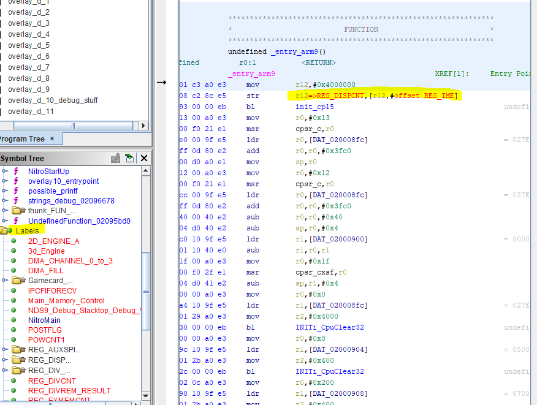
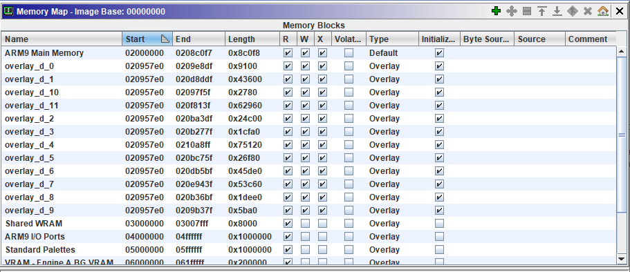
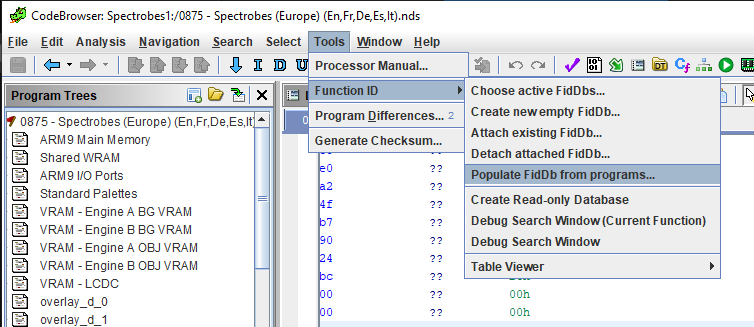
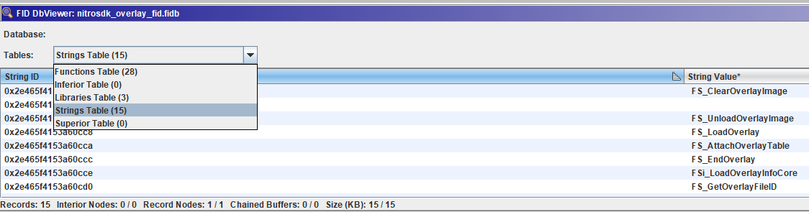

Loader Avanzado en Ghidra: labels, overlays y Function ID
Antecedentes
El mes pasado hablábamos sobre los conceptos básicos de un Loader para Ghidra. Esta vez cubriré algunas características adicionales para mejorar nuestra extensión y hacerla más útil y manejable.
Veremos estas nuevas características en orden ascendente de complejidad.
Labels
Muchas veces, cuando tratamos con sistemas embebidos, encontramos arquitecturas que son “simples” conceptualmente. Las medidas de seguridad son pocas, y el código de un programa suele compilarse de forma estática, y se carga siempre en la misma dirección de memoria. Esto también ocurre con las librerias.
Además, es común tener dispositivos I/O (entrada/salida) mapeados a direcciones de memoria o controlados a través de registros mapeados en memoria, como puede ser el caso de DMA y muchos otros.
Accedemos a estos registros utilizando una dirección física constante de memoria, es decir, que no cambia al reiniciar el dispositivo. En estos casos, podemos asignar nombres a esas direcciones (el nombre o trabajo del registro, por ejemplo) y hacer que Ghidra reemplaze todas las referencias a esa dirección con el nombre, haciéndo el código decompilado o el de-ensamblado mucho más comprensible para las personas.
public class NDSLabelList {
//This internal class represents a location of interest (registers, i/o, etc)
public class NDSLabel {
String name;
int addr;
public NDSLabel(String name, int addr) {
this.name = name;
this.addr = addr;
}
public String name() {return name;}
public int addr() {return addr;}
}
//This class uses a singleton pattern
private static NDSLabelList _instance = null;
Es práctico crear una clase del tipo XYZLabelList, en este caso, utilizando un patrón Singleton para que solo exista una instancia de esta clase. Internamente, esta clase contiene una lista de objetos del tipo XYZLabel, una clase que solo contiene la dirección de memoria y el nombre que le asignamos a esta, es decir, representa una de estas etiquetas o “labels”.
private static List<NDSLabel> _ARM9labels = new ArrayList<NDSLabel>();
private static List<NDSLabel> _ARM7labels = new ArrayList<NDSLabel>();
private NDSLabelList()
{
/*ARM 9*/
_ARM9labels.add(new NDSLabel("REG_DISPCNT", 0x4000000));
_ARM9labels.add(new NDSLabel("REG_DISPSTAT", 0x4000004));
...
En el constructor podemos añadir tantas clases como queramos. Y finalmente, en el código de nuestro loader iteramos esta lista y registramos cada etiqueta en Ghidra:
//Labels (REGISTERS, others, etc.)
for(NDSLabel l: NDSLabelList.getInstance().getARM9Labels())
{
api.createLabel(api.toAddr(l.addr()),l.name(),true);
}
¿El resultado? Un mapa de memoria más documentado, y un código más leible.

Overlays
Los overlays (traducción: superposición) no son más que eso, secciones de memoria cuya dirección es la misma, y por lo tanto se superponen unas a otras. No es difícil encontrar código que utilize overlays en dispositivos embebidos, con poca memoria RAM pero con mucha ROM.
Por ejemplo, disponemos de dos rutinas diferentes. Supongamos que ambas ocupan 0x100 bytes y que nuestra RAM empieza en 0xA0000000. Podríamos decidir cargar la primera en 0xA0000100 y la siguiente en 0xA0000200. Pero, ¿Y si no tenemos tanta memoria? En ese caso, podríamos utilizar una de ellas hasta que ya no la necesitemos, y proceder a cargar la siguiente en el mismo trozo de memoria, leyéndola desde la memoria ROM. Otro ejemplo conocido es el de los llamados “bancos de memoria” en videoconsolas antiguas.
Por supuesto, en el dispositivo real, solo un overlay puede estar a la vez en la memoria ram principal. Pero ambos están en la ROM. Así que, ¿por qué no ponérselo fácil a la persona que use nuestro plugin y cargar ambos en Ghidra a la vez?
Podemos hacerlo con una sencilla línea de código:
createInitializedBlock(program, true, "overlay_"+i, api.toAddr(overlay.RamAddress), stream, overlay.RamSize, "", "", true, true, true, log, monitor);
Por descontado debemos proveer los argumentos program (el objeto de programa de nuestro Loader). También “overlay_“+i que es el nombre del overlay (dentro de un bucle for), seguido por la dirección de memoria en la que se mapea el overlay, un stream de entrada con los datos binarios que cargaremos en el overlay, el tamaño, y un puñado de flags adicionales (read/write/execute).
El código de NTRGhidra contiene todo esto en contexto.

Function ID, fid databases y tablas de hashes
Una funcionalidad interesante que nos permite facilitar el análisis de muestras de binarios similares es Function ID. Nota: Function ID puede utilizarse sin un loader pero si acompañamos nuestra extensión de bases de datos de function id(fidDb de ahora en adelante) pregeneradas, tendremos un software mucho más útil. Sin ir más lejos, esto es algo en lo que me encuentro trabajando actualmente para NTRGhidra.
Function ID sería el simil a F.L.I.R.T. de IDA Pro. Afortunadamente, si estás pensando en dejar IDA y pasar a Ghidra, estás de suerte, hay una herramienta para convertir automaticamente bases de datos flirt a fidDb.
¿Cómo funciona? Function ID genera hashes de las funciones que le indiquemos, de forma que si aparecen en otros programas, no necesitaremos volver a analizarlas y descubrir que hacen. Tendremos su nombre.
Hay varias formas de crear y llenar nuestra fidDb. La forma manual es trabajar con una muestra, renombrar/analizar un cierto número de funciones, y después utilizar la opción “llenar fiDb desde programa” (“populate fidDb from program”). Otra posibilidad es generar las firmas de funciones a partir de archivos .o (librerias).

Esta opción genera un archivo .fidb que contendrá nuestras preciadas funciones.

Hay algunos casos en los que una función no puede añadirse a la base de datos, como puede ser una función extremadamente pequeña (su hash colisionaría con muchos fragmentos binarios) pero, para la mayoría de casos, Function Id está a la altura y hace el trabajo de forma excelente.
Bonus: peculiaridades de Java
Si tratamos de implementar alguna rutina adicional, como puede ser de decompresión, en Java, tal vez encontremos algunos comportamientos… peculiares.
- Java no contiene tipos de datos sin signo (unsigned)
Sí, asi es. Esto es especialmente inconveniente cuando portamos código desde otro lenguaje compilado. El mejor tipo de datos para valores muy altos (como los de un unsigned int) suele ser el long
- Java no tiene soporte real para hacer operaciones con bytes en tipos que no sean int o long.
Si intentamos hacer alguna operación de bits (shifts, and, or,..) en tipos como byte, la variable se convertirá de forma invisible a int antes de la operación. ¡Cuidado! porque esto puede causar problemas si nuestro bit tiene que ser tratado como unsigned pero se trata como con signo (bit más significante igual a 1). Dado que se utiliza complemento a 2 para la representación, al convertir a int los 8 bits se extenderán a 32, pero se hará con 1’s, no con 0’s.
- Right shift sin signo
En un intento por reducir el calvario de los tipos con signo, encontramos el operador >>>, que es un right shift que siempre extiende con ceros. Por otro lado tenemos el operador >> que en Java es right shift que extiende con el signo, es decir 1 si el bit mas significante es 1 (número negativo), o 0 si el bit más significativo es 0.
Conclusiones
Con estas características de Ghidra podemos mejorar nuestras extensiones y hacerlas mucho mejores y más profesionales. ¿Estás de acuerdo? ¡Deja tu opinión en los comentarios!